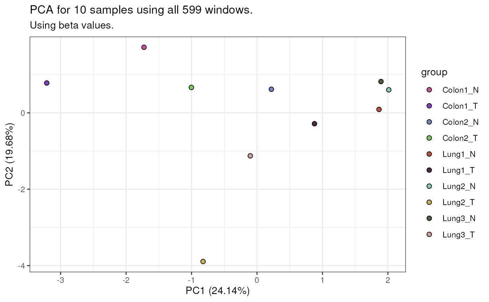
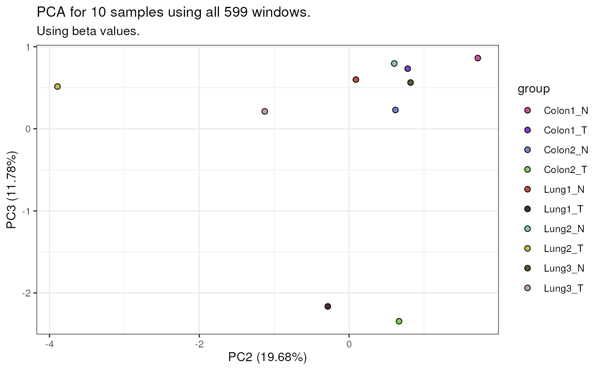
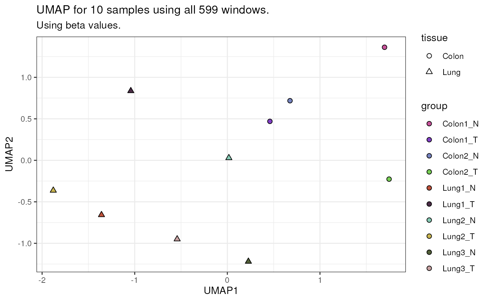
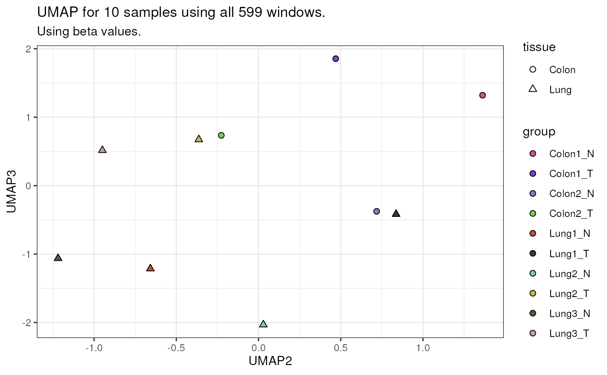
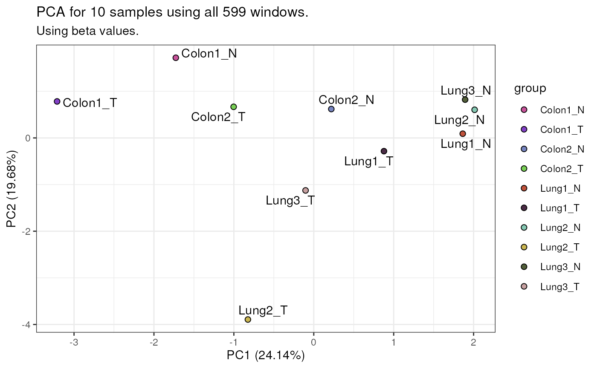
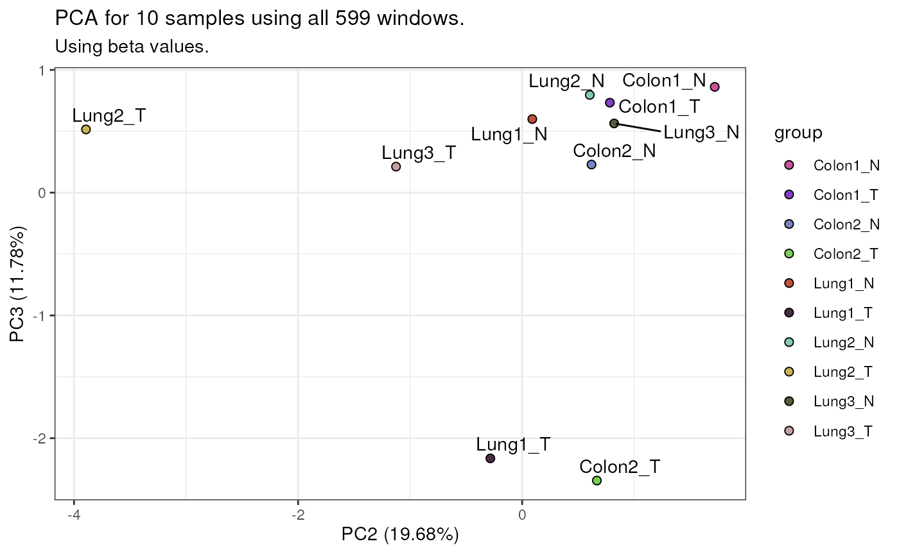

Visualise PCA or UMAP coordinates stored in a mesaDimRed object.
Wrappers such as BiocGenerics::plotPCA() and plotUMAP() provide convenient shortcuts
for common use cases.
mesaDimRed.
A dimensionality reduction container returned by getPCA() or getUMAP().
integer(2) or list of integer(2).
Component indices to plot (e.g. c(1, 2) for PC1 vs PC2). A list of pairs
generates multiple plots.
Default: list(c(1, 2), c(2, 3)) for PCA, list(c(1, 2)) for UMAP.
NULL or character().
Name(s) of sample-table variable(s) mapped to point colour. One plot is
produced per variable.
Default: NULL (no colouring).
NULL or character().
Palette for point colours. If NULL, defaults are selected automatically.
Default: NULL.
character(1).
Colour for missing values in colour.
Default: "grey50".
logical(1).
If TRUE, diverging colour scales are centred symmetrically around zero.
Ignored for non-diverging scales.
Default: FALSE.
NULL or character(1).
Sample-table variable mapped to point shape. Only one variable supported.
Default: NULL.
NULL, character(1), or numeric().
Shapes used for categories of the shape variable. Options:
A numeric vector of base-R shape codes:
0–20: line/filled shapes.
21–25: filled shapes with borders (border colour = black).
A keyword:
"line-first": 15 line shapes, then 4 filled shapes (max 19 categories).
"filled-first": 4 filled shapes, then 15 line shapes (max 19 categories).
"mixture": mixture of line and filled shapes (max 19 categories).
"filled+border": filled+border shapes (max 5 categories; 4 if NAs in shape).
NULL: automatic choice—"mixture" unless a diverging colour scale is
used, in which case "filled+border".
Default: NULL.
NULL or numeric(1).
Shape used for missing values in shape. If NULL, defaults to 7, or 25
when "filled+border" is active.
Default: NULL.
logical(1).
If TRUE, overlay sample names on points.
Default: FALSE.
numeric(1).
Size of plotted points.
Default: 2.
numeric(1).
Transparency of points in [0, 1].
Default: 1.
character().
Column names from the sample table used as tooltips when converting plots
to interactive plotly.
Default: "" (empty string).
A list of ggplot2 objects, one for each combination of:
component pairs in components, and
variables specified in colour.
Each plot depicts the requested dimensions with aesthetics mapped as specified.
data(exampleTumourNormal, package = "mesa")
# PCA: colour by group
exampleTumourNormal %>%
getPCA(nPC = 3) %>%
plotDimRed(colour = "group")
#> ------------------------------
#> Initial number of windows = 819.
#> -----------
#> Generating table of beta values for 819 regions across 10 samples.
#> -----------
#> Filtered out 220 windows with at least one missing value: 599 windows remaining.
#> ------------------------------
#> The following topVarNum values are larger than the number of remaining windows (= 599): 1000
#> These values are not used; PCA will be done with all remaining windows instead.
#> ------------------------------
#> No filtering of windows based on window standard deviation.
#> Performing PCA with 10 samples and 599 windows
#> -> pca1.
#> ------------------------------
#> $pca1
#> $pca1$group
#> $pca1$group$PC1vsPC2

#>
#> $pca1$group$PC2vsPC3

#>
#>
#>
# UMAP: colour by group, shape by tissue
exampleTumourNormal %>%
getUMAP(n_neighbors = 5, min_dist = 1) %>%
plotDimRed(colour = "group",
shape = "tissue")
#> ------------------------------
#> Initial number of windows = 819.
#> -----------
#> Generating table of beta values for 819 regions across 10 samples.
#> -----------
#> Filtered out 220 windows with at least one missing value: 599 windows remaining.
#> ------------------------------
#> The following topVarNum values are larger than the number of remaining windows (= 599): 1000
#> These values are not used; UMAP will be done with all remaining windows instead.
#> ------------------------------
#> No filtering of windows based on window standard deviation.
#> Performing UMAP with 10 samples and 599 windows
#> -> umap1.
#> ------------------------------
#> $umap1
#> $umap1$group
#> $umap1$group$UMAP1vsUMAP2

#>
#> $umap1$group$UMAP2vsUMAP3

#>
#>
#>
# Show sample names
exampleTumourNormal %>%
getPCA(nPC = 3) %>%
plotDimRed(colour = "group",
showSampleNames = TRUE)
#> ------------------------------
#> Initial number of windows = 819.
#> -----------
#> Generating table of beta values for 819 regions across 10 samples.
#> -----------
#> Filtered out 220 windows with at least one missing value: 599 windows remaining.
#> ------------------------------
#> The following topVarNum values are larger than the number of remaining windows (= 599): 1000
#> These values are not used; PCA will be done with all remaining windows instead.
#> ------------------------------
#> No filtering of windows based on window standard deviation.
#> Performing PCA with 10 samples and 599 windows
#> -> pca1.
#> ------------------------------
#> $pca1
#> $pca1$group
#> $pca1$group$PC1vsPC2

#>
#> $pca1$group$PC2vsPC3

#>
#>
#>